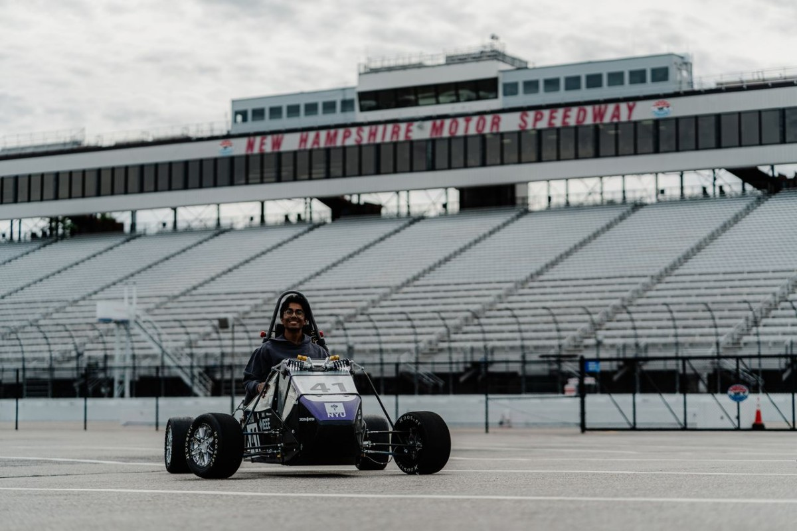
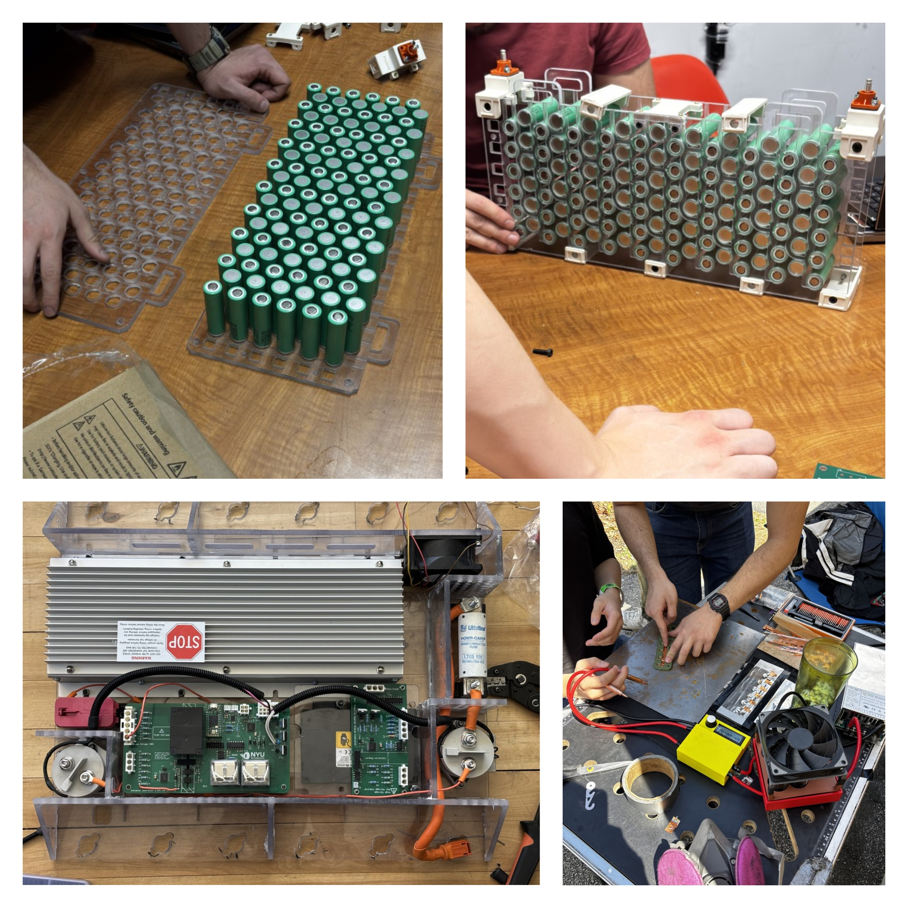

Project
NYU Motorsports

I joined NYU Motorsports in the fall of my sophomore year. Since then I've gotten real hands-on engineering experience pushing the High Voltage division to make our team competitive with other universities, and I've learned a lot from senior members about designing, manufacturing, and testing over the past year.
During my first semester I was introduced to topics like PreCharge, accumulator safety, and integration with the rest of the car. I began modeling our design in CircuitLab to test parameters and picked up Altium while researching components for our Contactor Controller PCB. I also led research on the development of our charging cart, per FSAE rules.

In the spring, my goal has been to make our car safe, efficient, and reliable. I did much of the accumulator manufacturing and assembly. As a TA at the MakerSpace, I had the privilege of using our WaterJet to cut out battery cell holders, accumulator case walls, copper busbars, nickel fuses, and the top cover of our accumulator, and I used the laser cutters to cut insulation paper to fit the inside walls. I also developed the BMS firmware for our custom BMS PCBs.
While our team didn't get to compete at the FSAE New Hampshire event, I spent a lot of time talking to other teams about their strategies and asking for advice on fixing small problems with our accumulator. It was still a great event where I learned a lot. This summer, as I take on more responsibility, I've been refining my knowledge of high-voltage topics (PreCharge, accumulator safety, fuses, and more) while designing the new fuses for our cells and testing our Contactor Controller.